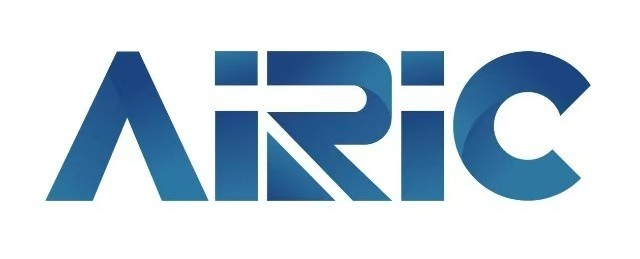
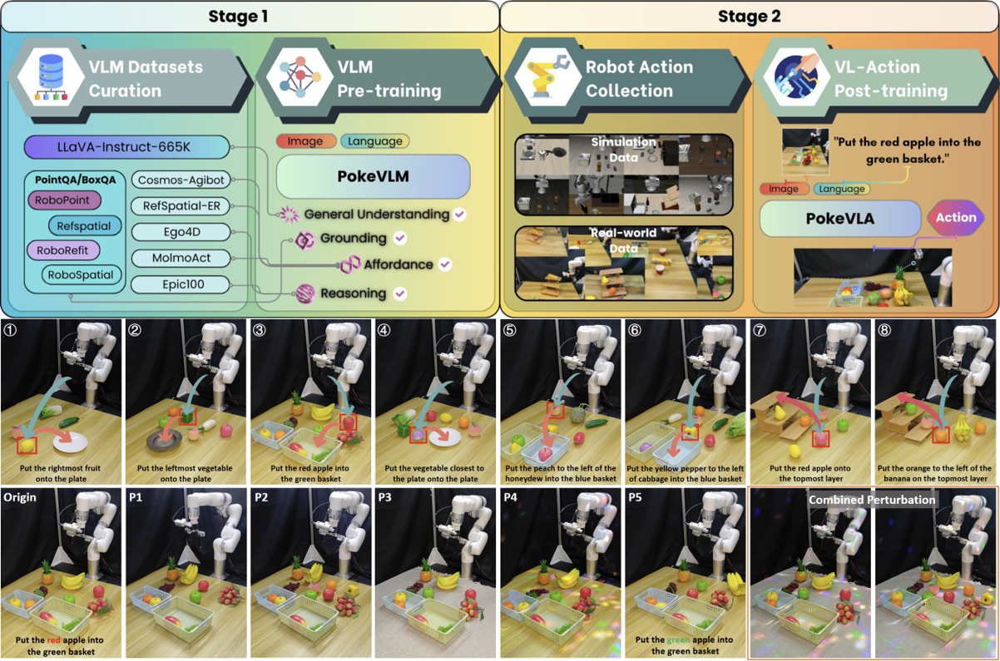
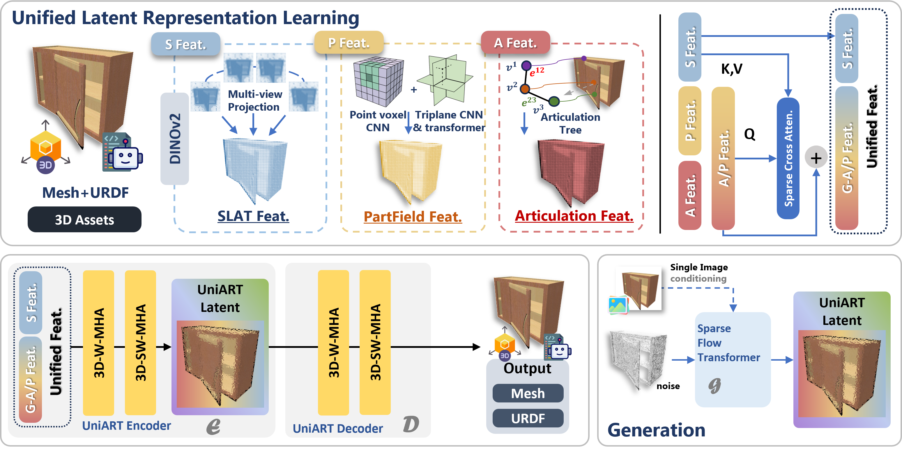

Experience
|

|
Tsinghua University | AIR Innovation Center
Research Assistant
Mentor:
Prof. Yilun Chen
|
Jan 2025 – May 2025
|
|
Research
I am broadly interested in the intersection of robotics, 3D vision and multimodal learning, with
the long-term goal of building embodied intelligent systems capable of human-level manipulation.
Currently, I am focusing on foundation model for robotics, bimanual manipulation and human-centric
cross-embodiment transfer.
|
|

|
PokéVLA: Empowering Pocket-Sized Vision-Language-Action Model with
Comprehensive World Knowledge Guidance
Yupeng Zheng,
Xiang Li,
Songen Gu,
Yuhang Zheng,
Shuai Tian,
Weize Li,
Linbo Wang,
Senyu Fei,
Pengfei Li,
YinFeng Gao,
Zebin Xing,
Qichao Zhang,
Yilun Chen,
Wenchao Ding,
Haoran Li.
In Submission, 2025
arXiv
|
|
|
World in Your Hands: A Large-Scale and Open-source Ecosystem for Learning
Human-centric Manipulation in the Wild
Yupeng Zheng*,
Jichao Peng*,
Weize Li,
Yuhang Zheng,
Xiang Li,
Yujie Jin, Julong Wei, Guanhua Zhang, Ruiling Zheng, Ming Cao,
Songen Gu, Zhenhong Zou, Kaige Li, Ke Wu, Mingmin Yang, JiahaoLiu,
Pengfei Li, Hengjie Si, Feiyu Zhu, Wang Fu, Likun Wang, Ruiwen Yao,
Jieru Zhao,
Yilun Chen,
Wenchao Ding.
In Submission, 2025
arXiv
|
|
|
LiteVGGT: Boosting Vanilla VGGT via Geometry-aware Cached Token
Merging
Zhijian Shu,
Cheng Lin,
Tao Xie,
Wei Yin,
Ben Li,
Zhiyuan Pu,
Weize Li,
Yao Yao,
Xun Cao,
Xiaoyang Guo
Xiao-xiao Long.
In Submission, 2025
arXiv
|
|

|
UniArt: Unified 3D Representation for Generating 3D Articulated Objects
with Open-Set Articulation
Bu Jin,
Weize Li,
Songen Gu,
Yupeng Zheng,
Yuhang Zheng,
Zhengyi Zhou,
Yao Yao.
In Submission, 2025
arXiv
|
|
|
VistaBot: View-Robust Robot Manipulation via Spatiotemporal-Aware View
Synthesis
Songen Gu,
Yupeng Zheng,
Yuhang Zheng,
Weize Li,
Yating Feng,
Xiang Li,
Pengfei Li,
Yilun Chen,
Wenchao Ding.
In Submission, 2025
arXiv
|
|
|
Taming VR Teleoperation and Learning from Demonstration for Multi-Task
Bimanual Table Service Manipulation
Weize Li,
Zhengxiao Han,
Lixin Xu,
Xiangyu Chen,
Harrison Bounds,
Chenrui Zhang,
Yifan Xu.
Technical Report, 2025
IEEE ICRA WBCD 2025 Challenge, 1st Place Prize in Table Service
Track
arXiv
|
|
|
RoboGEM: Learning Language-guided Robotic Manipulation via Generalizable
and Efficient Feature Distillation
Chunzheng Wang,
Yuhang Zheng,
Xiangyu Chen,
Weize Li,
Songen Gu,
Yupeng Zheng.
ACM International Conference on Multimedia (ACM MM), 2025
RoboSoft'25 Workshop, Best Paper Award
arXiv
|
|
|
PosePilot: Steering Camera Pose for Generative World Models with
Self-supervised Depth
Bu Jin*,
Weize Li*,
Baihan Yang,
Zhenxin Zhu,
Junpeng Jiang,
Huan-ang Gao,
Haiyang Sun,
Kun Zhan,
Hengtong Hu,
Xueyang Zhang,
Peng Jia,
Hao Zhao.
International Conference on Intelligent Robots and Systems (IROS), 2025
arXiv
|
|
|
Radiance Field-Based 3D Editing: A Survey
Weize Li*,
Tianshu Kuai*,
Huan-ang Gao,
Xiangyue Liu,
Yuhang Zheng,
Yupeng Zheng, etc.
In Submission, 2025
arXiv
|
|
|
TOD3Cap: Towards 3D Dense Captioning in Outdoor Scenes
Bu Jin,
Yupeng Zheng†,
Pengfei Li,
Weize Li,
Yuhang Zheng,
Sujie Hu,
Xinyu Liu,
Jinwei Zhu,
Zhijie Yan,
Haiyang Sun,
Kun Zhan,
Peng Jia,
Xiaoxiao Long,
Yilun Chen,
Hao Zhao.
European Conference on Computer Vision (ECCV), 2024
arXiv
|
|
|
PAD: A Dataset and Benchmark for Pose-agnostic Anomaly Detection
Qiang Zhou*,
Weize Li*,
Lihan Jiang,
Guoliang Wang,
Guyue Zhou,
Shanghang Zhang,
Hao Zhao.
Neural Information Processing Systems (NeurIPS) , 2023
arXiv
|
|
|
IRFLMDNN: Hybrid Model for PMU Data Anomaly Detection and Re-filling with
Improved Random Forest and Levenberg Marquardt Algorithm Optimized Dynamic Neural Network
Miao Yu†,
Chenyu Yang*,
Weize Li*,
Weijie Du,
Jinglin Li.
Neural Computing and Application, 2023
arXiv
|
Honors and Awards
-
Best Paper Award, ACM MM RoboSoft'25 Workshop. | Program Committee.
-
Champion Award, IEEE ICRA 2025 WBCD Challenge (Table Services Track). | 1st WBCD
Challenge Organizer Committee.
-
Best Undergraduate Thesis Award - Class of 2022. | Beijing Education Commission.
|
Academic Service
Reviewer:
Conference: NeurIPS'23, CVPR'24, ICRA'24, ICLR'25, IROS'25, CVPR'26.
Journal: IJCV, R-AL.
Organizer:
2nd What Bimanuals Can Do (WBCD) Competition, IEEE ICRA 2026.
|
Misc.
Outside of my research, I also enjoy photography📸, fitness training💪, and ball sports (such as
football⚽,
basketball🏀, tennis🎾, badminton🏸, etc.). I am also a registered referee🪪 with the Chinese
Football
Association.
|
|